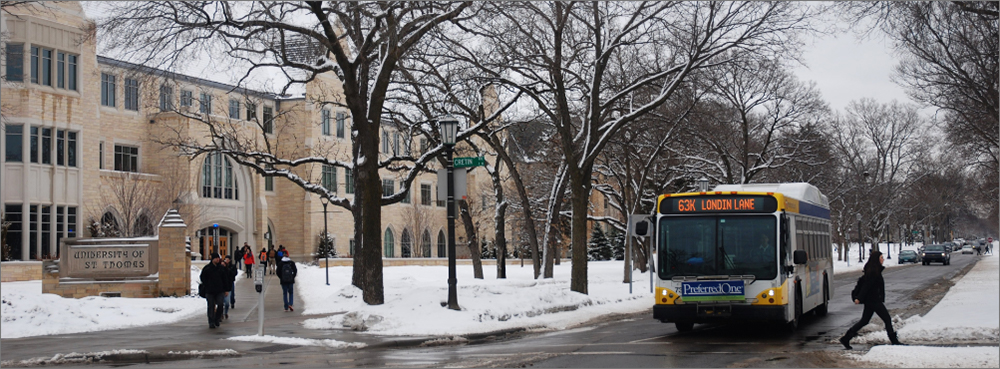

Better Bus Routes

Better Bus Routes Better Bus Routes is an initiative to improve your experience riding local bus routes by reducing stops, improving accessibility and providing more shelters. These changes, both on and off the bus, will make your trip better, faster and more reliable.
We started with Route 2 in 2018 and are now planning improvements to Route 63 in 2020.
Consolidating bus stops
To help buses spend more time moving and less time stopping, Metro Transit may reduce the number of bus stops. We typically can do this by eliminating stops with low ridership, but in some cases, we might combine two bus stops into a single new stop. To balance access and travel time, stops may be up to a quarter-mile apart.
Why a quarter-mile? Wider stop placement can:
- Reduce overall travel time
- Help buses run more on-time
- Make the trip more consistent and reduce delays
- Provide a smoother ride with less starting and stopping
How do you decide which stops to remove?
Each stop is unique and requires its own analysis. Some the many key factors to consider when reviewing bus stops:
- Distance between stops
- Ridership
- Transfer activity with other bus or rail service
- Adjacent land uses such as hospitals, schools or grocery stores
- Roadway design, including street crossings, signals and pedestrian infrastructure
- Existing transit facilities
Balancing bus stop locations
This video shows how spreading out bus stops makes things move faster.
Improving accessibility
Public transit should be accessible to all. Better Bus Routes will evaluate each bus stop’s compliance with the Americans with Disabilities Act to ensure customers with limited mobility can access the service we provide. We’ll also look at how you get to the bus stop and consider improvements to sidewalks, pedestrian signage and visibility to make your walk safer and easier.
Improving the waiting experience
The bus stop is Metro Transit’s front porch so it’s important that it’s a welcoming place.
Better Bus Stops
Better Bus Stops is our commitment to improve customers’ comfort while waiting for the bus using transit information, shelters, lighting and heaters, accessibility improvements and maintenance.
The program began in 2014 with a goal of enhancing access to opportunity through focused investment in neighborhoods where most residents are people of color and households are experiencing lower incomes. The program set out to add 150 shelters at high ridership bus stops, and to add heat, light, or both at 75 existing shelters - due to be achieved in 2019.
Metro Transit has limited resources to spend on its nearly 12,000 bus stops and so must prioritize where shelter investments are made. Using what we learned through a year-long community engagement process, we updated our shelter placement guidelines in 2018. The guidelines are used to prioritize shelter locations, and reflect community input about the importance of shelters at key locations such as near healthcare clinics and in areas where people are unlikely to own a vehicle.
What do we consider?
Walking distance
How far will customers walk to reach common destinations along the route?
Ridership
Metro Transit’s shelter guidelines define priorities to provide shelters at bus stops as:
- Highest priority – 100+ average daily boardings and in a priority location*
- High priority – 100+ average daily boardings
- Medium priority – 30+ average daily boardings and in a priority location*
- Low priority – at least 30 average daily boardings if resources are available
*Priority locations include areas where more households do not have cars, near hospitals, healthcare clinics, social service providers, housing for people with disabilities or older adults, and major transit transfer points.
Stop improvements
Each stop location is different. There are different types of shelters to accommodate various stop footprints.